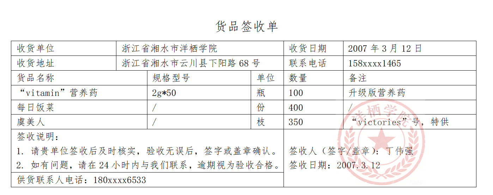
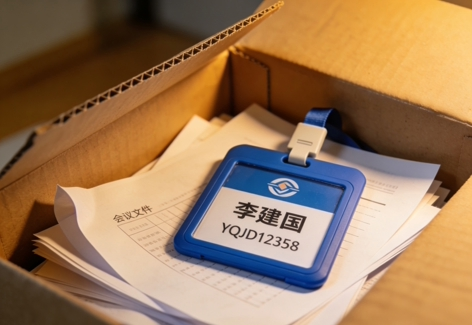

工作日志1
姓名：丁伟强
岗位：洋栖学院保安
日期：2007年3月12日
今天主要就是看门、巡逻、收货。
白天学生进出挺多，离校的都按要求签了到，请假的也都查了假条，没乱出去的。
上午送来了一批物资，我点了数量，学校“亲花节”要用的花，挺漂亮的，看了东西没问题，签收收好，登记进台账。
中间在校园里转了几圈，一切正常，没出啥乱子。
一天下来没什么意外，按规矩把事都做完了。
记录人：丁伟强

工作日志2
姓名：丁伟强
岗位：洋栖学院保安
日期：2007年5月7日
今天上午没什么特别的事，正常守着校门，盯着学生离校签到、查请假单，一切都挺顺当的。
中途教导主任李建国找我，让我帮忙把他的工牌和一些文件资料送到会议室门口，我拿着东西赶紧送过去了。递东西的时候瞅了一眼他的工牌号，看着一串数字怪怪的，跟普通工牌号不一样，我就随口说了句：“李主任，你这工牌号看着挺特别啊，跟我们的都不一样。”
李主任听完笑了，跟我说这是斐波那契数列，我听着这名儿就懵懵懂懂的，压根没听懂是啥意思。他还跟我介绍，说学校官网有个数学天地板块，每天都会自动上传一道高考数学题，学生没事就能上去练习刷题。说着还建议我，平时执勤不忙的时候也可以点开看看，学着做点题提升提升。
我心里直犯嘀咕，我本身文化程度就低，上学的时候数学就一窍不通，这些高考题看着就头疼，哪学得会啊，根本就不想碰这些东西。但也不好驳主任的面子，就随口应了两声，没再多说啥。
送完东西回去继续值守，下午巡了巡校园，整理了下离校登记的本子，一天的工作就结束了，没出啥差错。
记录人：丁伟强

工作日志3
姓名：丁伟强
岗位：洋栖学院保安
日期：2007年7月9日
最近听说陈敬山校长左肩受伤，行动不方便，这几天我们安保部要负责把校长的午饭、晚饭送到他办公室，不让他再跑食堂了。
我今天主要还是在门口值班，查学生请假单、登记离校，没出什么问题。
到了饭点，我按要求去食堂把校长的饭菜拿好，小心端到校长办公室，放下之后又简单收拾了一下桌面，确认校长这边没别的吩咐，我才回到岗位继续执勤。
校长行动看着确实不太方便，我们多跑几趟也是应该的。
今天整体秩序正常，没有突发情况，该做的都做完了。
记录人：丁伟强